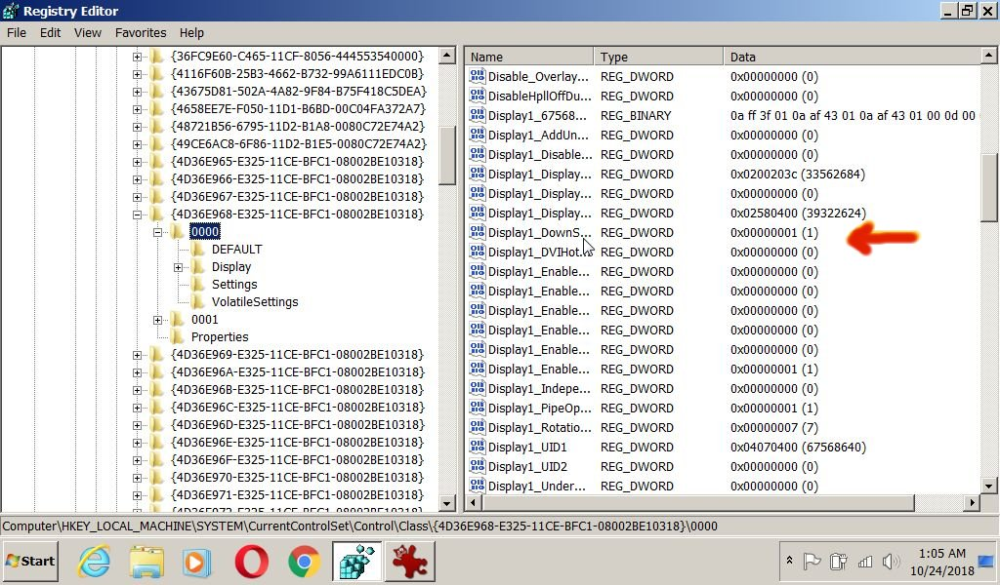

Where to find in registry: "Display1_DownScalingSupported" for using Windows 8.1 on your Notebook.
HKEY_LOCAL_MACHINE / SYSTEM / Current Control Set / Control / Class / {4D36E968-E325-11CE-BFC1-08002BE10318} / 0000
Open DWORD : Display1_DownScalingSupported change value to 1
Finding is a little tricky at the end:
